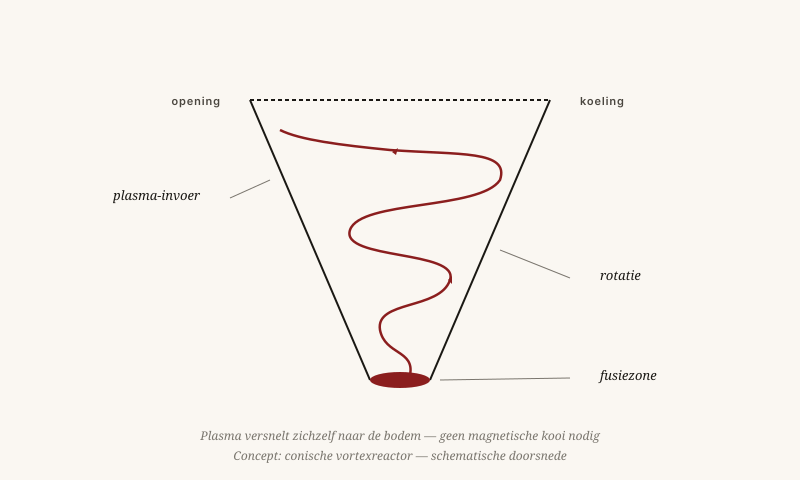

Een fusiereactor zonder magnetische kooi
ITER en JET besteden miljarden om plasma op te sluiten met magneten. Mijn voorstel: laat het plasma zichzelf opsluiten — door rotatie.
Door Jacobus van Merksteijn · 11 min lezen · 23 mei 2026

De gecontroleerde vortex — naar Tesla
Het probleem is niet technisch — het is conceptueel
ITER, JET, Wendelstein-7X. Miljarden, decennia, en nog steeds geen netto-energie. Sinds 1955 wordt fusie "binnen dertig jaar" beloofd. We zijn nu zeventig jaar verder. Dat is geen toeval. Dat is een teken dat het concept niet werkt.
De huidige reactoren proberen plasma op te sluiten met magneten in een vierdimensionaal denkkader. Plasma houdt zich daar niet aan. Het ontsnapt langs paden die u pas ziet als u G (schaal) en W (waarde) meeneemt.
De G-mismatch
Plasma is een verzameling geladen deeltjes met enorm verschillende massa's: elektronen zijn 1.836 keer lichter dan protonen. Magneten werken op de grote schaal. De ontsnappingsroutes zitten op de kleine schaal. Wie de kleine schaal niet apart aanpakt, verliest het plasma altijd.
De conische vortexreactor
Een conische vortex is een trechtervormige reactor waarin plasma niet wordt opgesloten maar versneld in een ronddraaiende stroming — zoals water in een wervel. De rotatie levert de opsluitkracht.
De cone-vorm zorgt voor compressie naarmate het plasma de bodem nadert: hoe dichter bij de punt, hoe sneller de rotatie, hoe hoger de dichtheid, hoe meer kans op fusie.
De parallel met stromingsleer is geen toeval. Een tornado is ook een opgesloten energiebundel die door zijn eigen rotatie bestaat — niemand sluit een tornado op in een kooi.

Voordelen tegenover drie open vragen
Voordelen
- Geen exotische supergeleiders. ITER gebruikt magneten gekoeld tot −269°C. Een vortexreactor heeft veel minder krachtige magneten nodig.
- Continu in plaats van pulsen. De rotatie kan worden volgehouden, zoals een fontein blijft stromen. Tokamaks werken in pulsen van enkele seconden.
- Zelfregelend. Een stroming reageert op verstoringen door zichzelf te corrigeren. Een magnetische opsluiting reageert door uit elkaar te vallen.
Open uitdagingen
- Eerste opstart. Hoe krijgt u de eerste rotatie op gang? Een combinatie van magnetische impuls plus inertie-injectie zou kunnen werken.
- Wandmateriaal. Straling en neutronen treffen de wand anders dan in een tokamak — beter of slechter is nog een open vraag.
- Energie-extractie. Hoe haalt u de fusiewarmte eruit zonder de rotatie te verstoren? Een mantelstroming met heliumkoeling zou werken maar vraagt nauwkeurige afstemming.
Doe het experiment
Ik ben geen plasmafysicus van beroep. Wat ik wel heb, is een vermoeden gebaseerd op decennia werk met stromingen — water rond scheepsrompen, lucht rond vleugels, biomassa door injectoren. Stromingen doen wat ze doen, ongeacht het medium.
Een serieuze tweede gok
Wat ik vraag is niet: "geloof mij." Het is: "doe het experiment." Een kleinschalige conische reactor kost geen miljarden — een paar miljoen, een goed team, en een paar jaar. In een Nova Democratia-model zou een onafhankelijk panel kunnen besluiten vijf procent van het fusiebudget naar onorthodoxe ontwerpen te leiden.
Een fusiereactor zonder magnetische kooi
ITER besteedt twintig miljard euro om plasma met magneten op te sluiten. Het alternatief: laat het plasma zichzelf opsluiten door rotatie.
Sinds 1955 wordt kernfusie „binnen dertig jaar" beloofd. We zijn nu zeventig jaar verder. ITER, JET, Wendelstein-7X — miljarden euro's, nog steeds geen netto-energie. Dat is geen toeval maar een teken dat het concept niet werkt. Het probleem is niet technisch maar conceptueel: plasma ontsnapt langs paden die u pas ziet als u de schaalwet G meeneemt. Elektronen zijn 1.836 keer lichter dan protonen; magneten werken op de grote schaal maar de ontsnappingsroutes zitten op de kleine schaal.
De conische vortexreactor is een trechtervormige reactor waarin plasma niet wordt opgesloten maar versneld in een ronddraaiende stroming — zoals water in een wervel. De cone-vorm zorgt voor compressie naarmate het plasma de bodem nadert: hoe dichter bij de punt, hoe sneller de rotatie, hoe hoger de dichtheid, hoe meer kans op fusie. De parallel met een tornado is geen toeval — niemand sluit een tornado op in een kooi.
Voordelen: geen supergeleiders gekoeld tot minus 269 graden, continue werking in plaats van pulsen van enkele seconden, en een zelfregelend systeem. Open vragen: de eerste opstart, wandmateriaal en energie-extractie zonder de rotatie te verstoren.
Wat ik vraag
Niet: „geloof mij." Maar: „doe het experiment." Een kleinschalige conische reactor kost geen miljarden — een paar miljoen, een goed team, een paar jaar. In een Nova Democratia-model zou een onafhankelijk panel kunnen besluiten vijf procent van het fusiebudget naar onorthodoxe ontwerpen te leiden. Stromingen doen wat ze doen, ongeacht het medium.